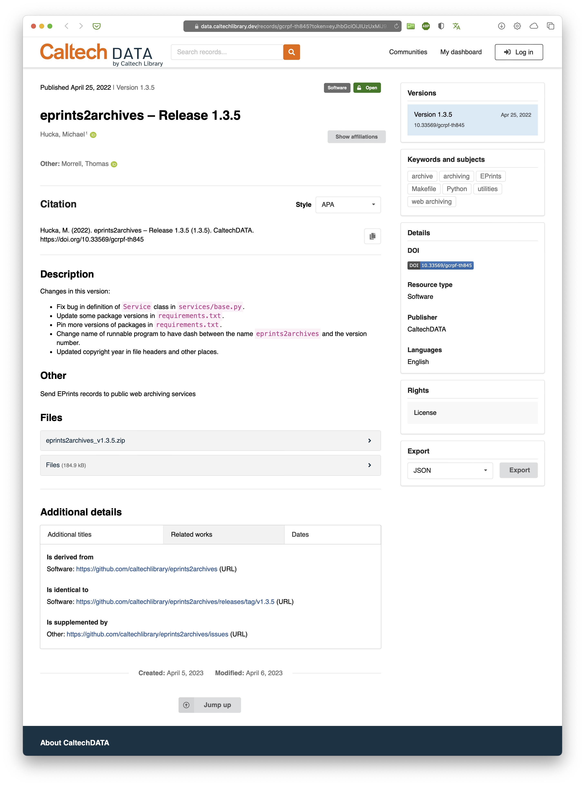
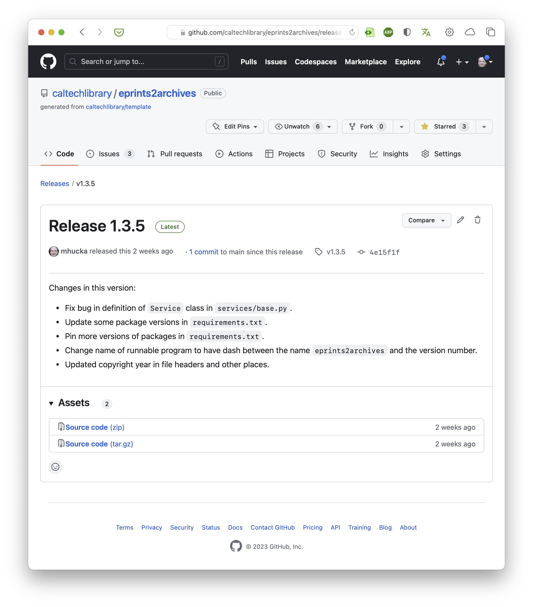

Introduction¶
InvenioRDM is a research data management (RDM) repository platform based on the Invenio Framework and Zenodo. At institutions like Caltech, InvenioRDM is used as the basis for institutional repositories such as CaltechDATA. Of particular interest to software developers is that a repository like CaltechDATA offers the means to preserve software projects in a long-term archive managed by their institution. Here is a screenshot of an example software project release archived in CaltechDATA:

The metadata contained in the record of a deposit is critical to making the record widely discoverable by other people, but it can be tedious and error-prone to enter the metadata by hand. This is where automation such as IGA come in: IGA can save users the trouble of depositing software and filling out the metadata record in InvenioRDM by performing all the steps automatically.
IGA features¶
The InvenioRDM GitHub Archiver (IGA) creates metadata records and sends software releases from GitHub to an InvenioRDM-based repository server. IGA can be invoked from the command line; it also can be set up as a GitHub Action to archive GitHub releases automatically in an InvenioRDM repository. Here are some of IGA’s other notable features:
Automatic metadata extraction from GitHub releases, repositories, and
codemeta.jsonandCITATION.cfffilesThorough coverage of InvenioRDM record metadata using painstaking procedures
Recognition of identifiers that appear in CodeMeta and CFF files, including ORCID, ROR, DOI, arXiv, and PMCID
Automatic lookup of publication data in DOI.org, PubMed, Google Books, & other sources if needed
Automatic lookup of organization names in ROR (assuming ROR id’s are provided)
Automatic lookup of human names in ORCID.org if needed (assuming ORCID id’s are provided)
Automatic splitting of human names into family and given names using ML-based methods if necessary
Support for InvenioRDM communities
Support for overriding the metadata record it creates, for complete control if you need it
Ability to use the GitHub API without a GitHub access token in many cases
Extensive use of logging so you can see what’s going on under the hood
GitHub releases¶
Although IGA can be used to produce arbitrary records in InvenioRDM repositories, it’s focused on automating the process of creating records for GitHub releases.
A release in GitHub is the mechanism by which users can package up a specific version of their software or data in a way that makes it easy for other users to obtain a copy. Releases are associated with individual repositories and are identified by git tags; they can contain source code archives (e.g., in ZIP format), release notes, and binary assets such as compiled executables. Below is the GitHub release page for the record shown in the previous figure.

You may be asking yourself “but … if the releases are already stored in GitHub, why bother storing them elsewhere?” There are at least two reasons:
GitHub is not an archive. Repositories can be renamed or deleted (intentionally or accidentally), and so can user accounts; moreover, the contents of releases can also be edited and changed. In other words, what is available on GitHub today may not be available there tomorrow. Preservation of digital contents needs an archiving approach capable of retaining immutable copies of software in a form that can outlive individual projects and people.
Compliance with open data requirements. Many funding agencies and institutions require that research projects ensure free access to products of the research. Institutional repositories are specifically designed to support the needs of researchers in complying with funder or publisher data requirements. Institutional repositories provide features that GitHub does not, such as assigning globally-unique, permanent, citable identifiers (such as DOIs) for data and software.
CodeMeta & CITATION.cff¶
GitHub by itself only records relatively sparse metadata about software releases and users associated with them. Thankfully, two efforts in recent years provide the means for software authors to describe software projects in more detail: CodeMeta and CITATION.cff. Both are becoming increasingly well-known, especially among research software developers. Tips for creating them can be found in a separate section of this document.
IGA looks for codemeta.json and CITATION.cff files in a repository and uses the information in them as the primary bases for constructing InvenioRDM metadata records. If a repository contains neither file, IGA resorts to using only the metadata provided by GitHub for the release and the associated repository.
Using IGA¶
IGA makes it easy to archive any release from GitHub into an InvenioRDM server. Once you have a personal access token (PAT) for InvenioRDM (and optionally for GitHub too) and have set the environment variable INVENIO_TOKEN (and optionally GITHUB_TOKEN), you can archive a GitHub release as easily as in this example:
iga -s data.caltech.edu https://github.com/mhucka/taupe/releases/tag/v1.2.0
IGA will contact GitHub, extract metadata from the release and the repository, construct a metadata record in the format required by InvenioRDM, and send the record plus the GitHub release source archive (a ZIP file) to the InvenioRDM server. Various options can modify IGA’s behavior, as explained in detail in the section on command-line usage of IGA.
Note that the availability of a command-line version of IGA means you can also use it to send past releases to an InvenioRDM server – IGA doesn’t care if what you’re asking it to archive is the latest release of something; it can archive any release. This makes it useful for archiving past projects; it also makes it possible for institutions to easily perform activities such as archiving software on behalf of faculty and students.
As a GitHub Action, IGA allows you to set up a GitHub workflow that will automatically send new releases to a designated InvenioRDM server. The procedure for this is detailed in the section on GitHub Action usage of IGA. Once set up, you do not have to remember to send releases of a particular GitHub project to InvenioRDM – it will do it for you.